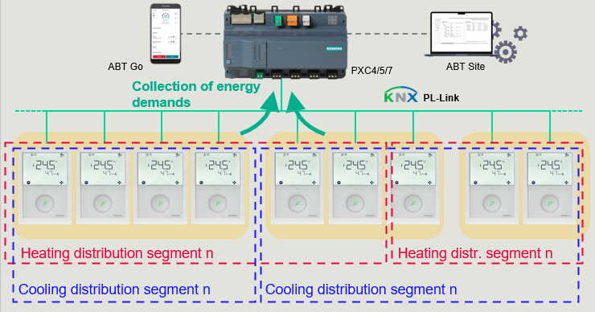
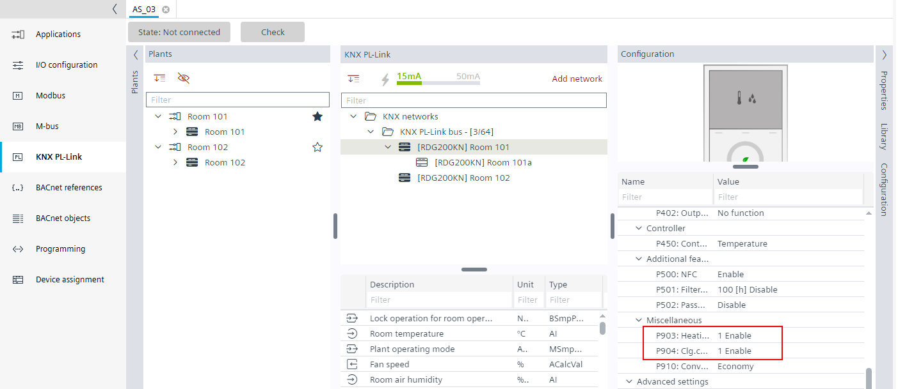
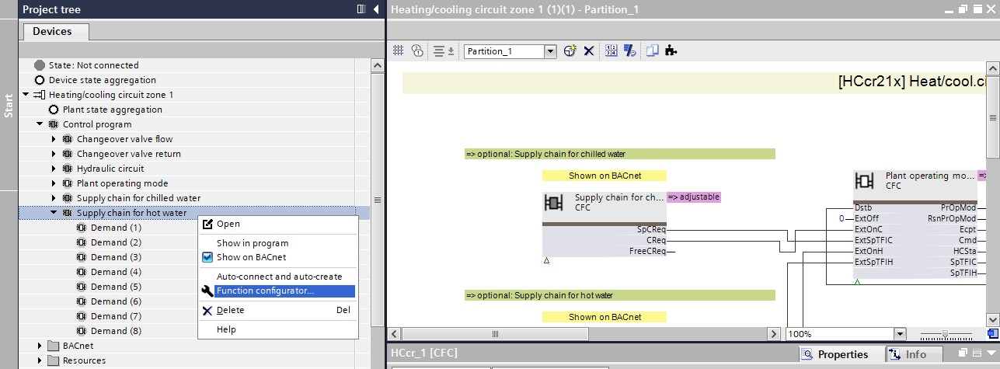
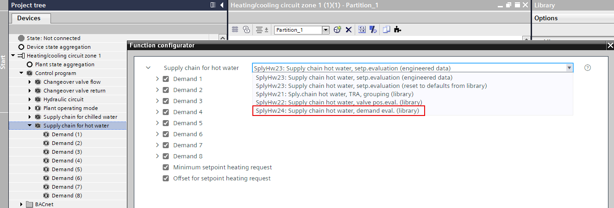
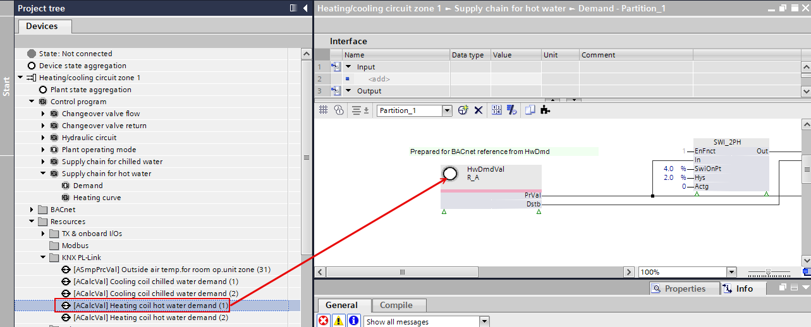

Adapting the RDG2 device chart for heating/cooling demand
The heating and cooling demand signals are aggregated on the KNX PL-Link bus itself. The values of all RDG2s (managers and subordinates) which are configured to belong to this zone are considered.
Configuring the RDG2 heating/cooling coil demand with zones

To exchange data with the primary plant, the corresponding data points of each zone have to be added to the control program. The library provides matching program blocks SplyHW24 and SplyChw24 for the data exchange.
[SplyHw24] Supply chain hot water, demand evaluation
[SplyChw24] Supply chain chilled water, demand evaluation

Create heating/cooling group
- The aggregation function is defined for each signal type and zones.
Defining the aggregation of the demand signal

- Go to Building > Building structure.
- Right-click a device and select Go to engineering.
- Open the KNX PL-Link task.
- In the KNX PL-Link area, select a device (room).
- Right-click and select Show in program.
- The Programming editor opens.
- Select the Library tab.
- Select a plant, for example, Plants > Nested > [HCcr21x] Heat/cool circ.
- Drag the plant to Add plant.
- The plant is added to the Project tree.

- Create a heating group for each zone.
Replace the heating/cooling demand control program SplyHW23/SplyChw23 with SplyHW24/SplyChw24
- In the Project tree, select the [Heating/cooling circuit zone 1]
 .
. - Select Control program > Supply chain for hot water.

- Right-click and select Function configurator.

- The Function configurator dialog box opens.
- Do the following:
- In the Supply chain for hot water drop-down list, select SplyHw24.

- Select
 help to read the information about this function.
help to read the information about this function. 
- Select the required functions
 .
. - Click OK.
- The SplyHW23 is replaced with the SplyHW24.
- Select Control program > Supply chain for hot water > Demand.
- Right-click and select Show in program.
- Double-click the Demand block.

- The sub-chart opens.

- Select [Heating/cooling circuit zone 1] > Resources > KNX PL-Link > [ACalcVal] Heating coil hot water demand (1).
- Drag the [ACalcVal] Heating coil hot water demand (1) to the HwDmdVal FB.

- Repeat these steps for all heating demands to the corresponding heating circuit.
- Repeat these steps for all cooling demands to the corresponding cooling circuit.